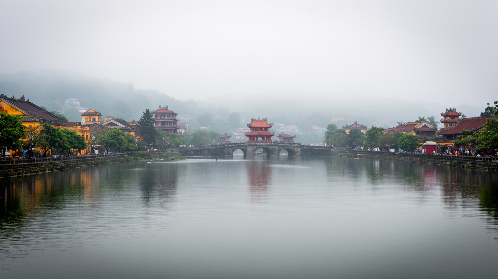
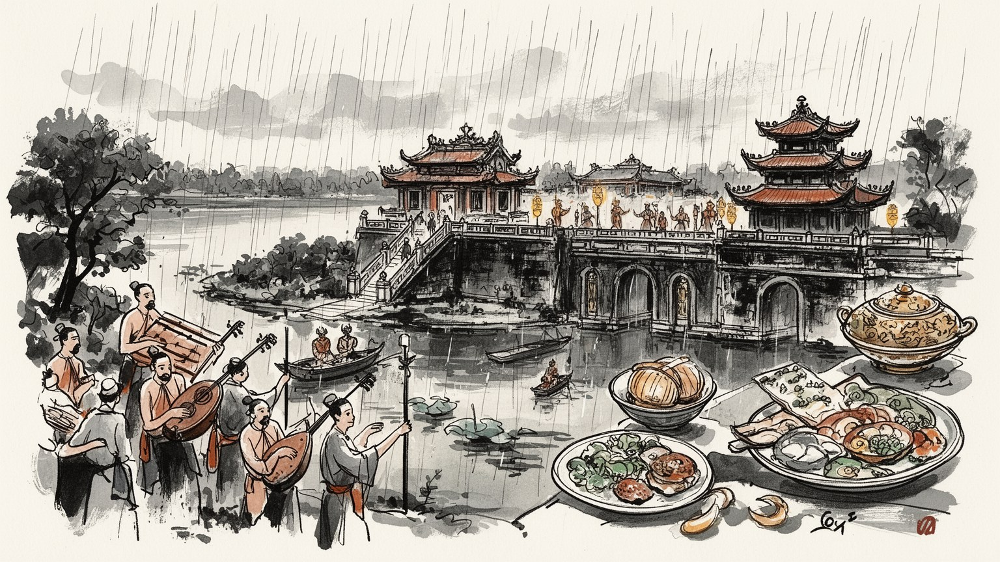
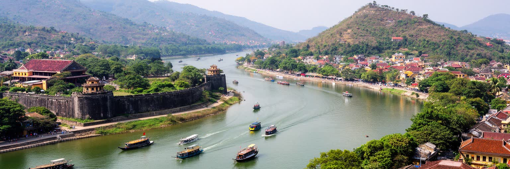
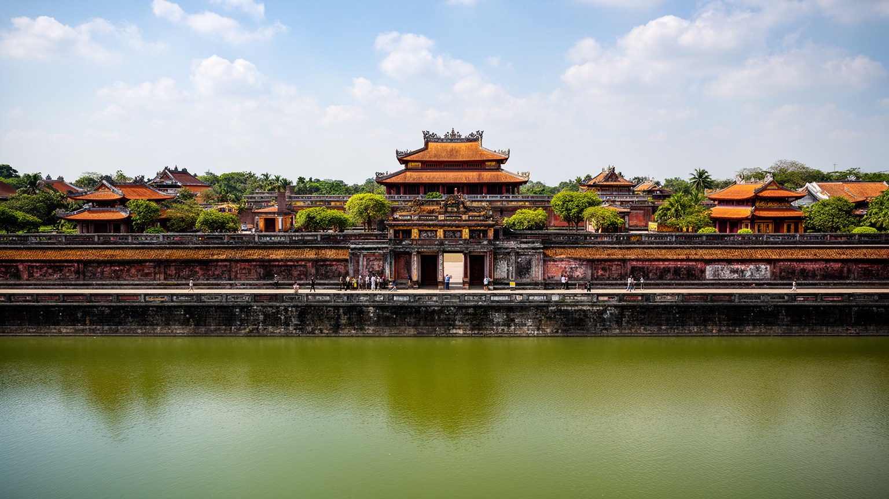
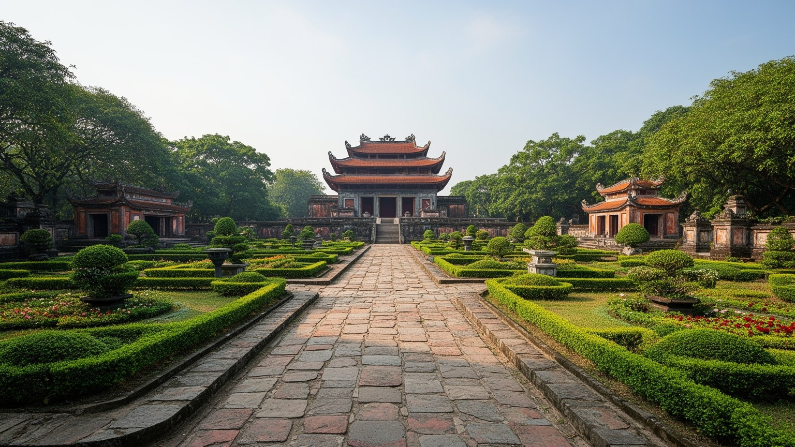
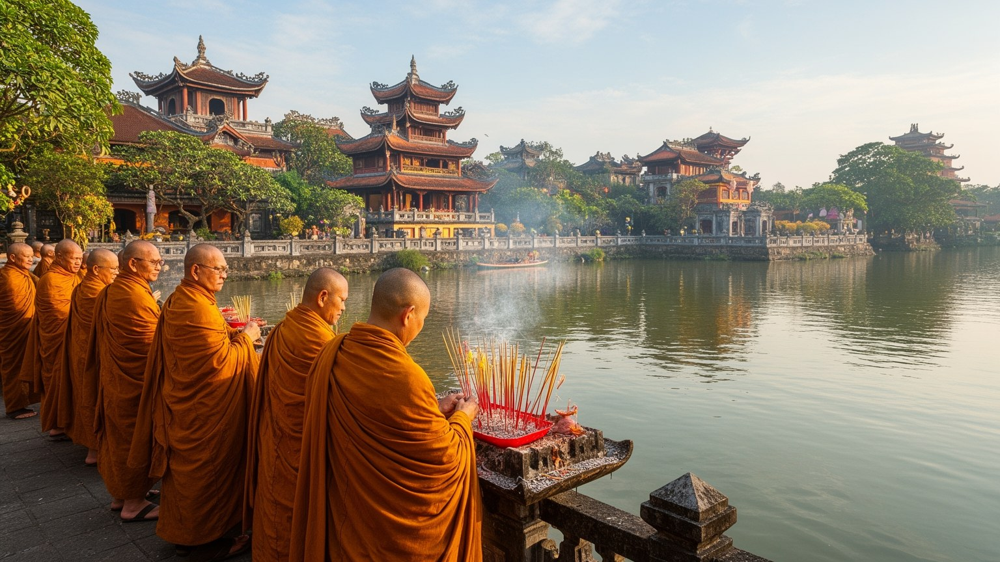
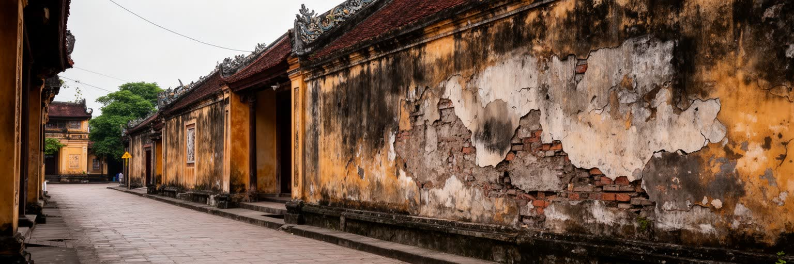
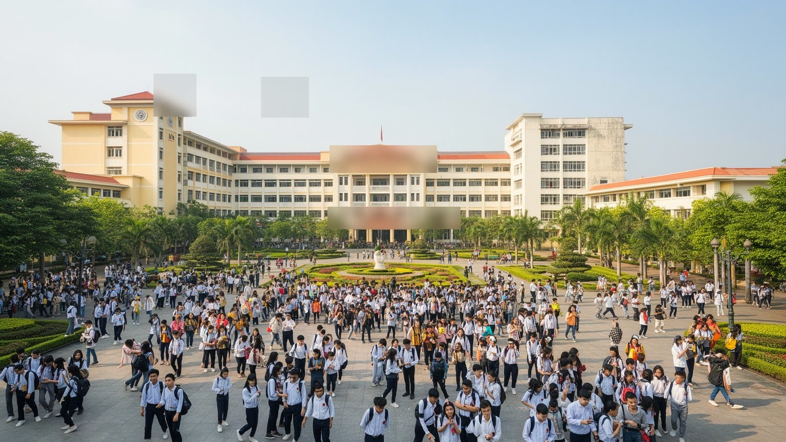
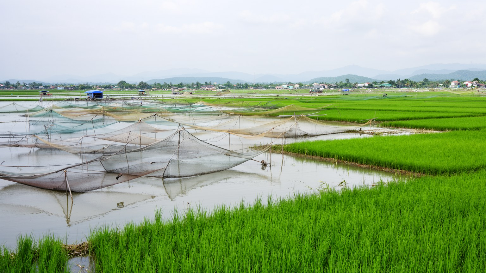
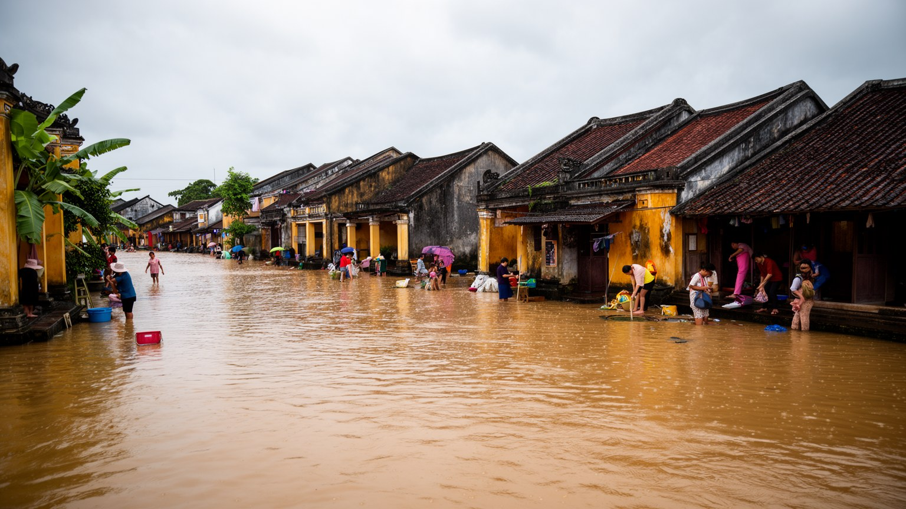

地政学
フエはベトナム中部の海岸、山地、ラオス国境へ近い都市で、南北を結ぶ国道と鉄道の要衝でもあります。中央直轄市への転換は、古都を文化だけでなく広域行政と観光、災害対応の拠点として位置づける動きでもあります。

🇻🇳 ベトナム / 東南アジア / World City Atlas
香江のほとりに王宮、寺院、陵墓、大学、病院、市場、戦争の記憶が重なる古都です。中央直轄市となった現在も、文化遺産と生活の川が都市の骨格を作っています。
都市の骨格
フエは宮城だけの都市ではありません。香江の流れ、寺院、陵墓、旧市街、ラグーン、海岸、山麓、病院と大学が近く、文化財を守る仕事と日々の暮らしが同じ水辺で重なっています。

フエはベトナム中部の海岸、山地、ラオス国境へ近い都市で、南北を結ぶ国道と鉄道の要衝でもあります。中央直轄市への転換は、古都を文化だけでなく広域行政と観光、災害対応の拠点として位置づける動きでもあります。
観光、文化財修復、教育、医療、行政、農水産、工芸、小売が雇用を支えます。遺産観光は収入を生みますが、案内、清掃、宿泊、船、飲食、修復労働は見えにくいです。季節変動と低賃金も課題で、技能継承も問われます。
阮朝の宮廷文化、仏教寺院、祖先祭祀、陵墓、宮廷音楽、精進料理が都市の時間を整えます。観光向けの美しさの背後で、家族の法事、川辺の祈り、寺の修行、学校行事が古都の生活文化を支えています。記憶も継がれます。
王宮、ティエンムー寺、陵墓、ドンバ市場、香江の船旅は訪問者を引きますが、住民には洪水、暑さ、住宅、若者の雇用、交通、文化財周辺の規制が日常の条件です。古都は生活の街としても読まれます。家計にも響きます。

フエの都市感覚は、香江を中心に組み立てられています。川は山地から市街へ流れ、王宮、寺院、旧市街、橋、船着き場、庭園住宅、郊外の陵墓をゆるやかにつなぎます。北岸には城郭都市の骨格があり、南岸には行政、大学、病院、商業、住宅が広がるため、川を渡る行為そのものが歴史と日常の境目を越える経験になります。西には山麓と陵墓の静けさがあり、東にはタムザン・カウハイのラグーン、農漁村、海岸へ続く水の世界があります。フエは内陸の古都であると同時に、海と湿地に近い都市でもあります。雨季には川の美しさが洪水の不安へ変わり、橋、堤、防災情報、避難、観光船の運航、低地の住宅が一斉に影響を受けます。香江は写真の背景ではなく、都市の移動、信仰、経済、危険を束ねる生活の軸です。川沿いを歩くと、王朝の記憶と学生の通学、屋台、ブンボーフエの湯気、釣り、法要、夜市が同じ風景に入ってくります。水辺を保存することは、景観を飾ることではなく、都市がどの高さで住み、どこで働き、どこへ逃げるかを決めることです。フエを読む第一歩は、宮殿を点で見るのではなく、川と低地、山、ラグーンを一本の生活圏としてつなぐことにあります。さらに川は、朝の市場、夕方の散歩、祭礼の行列、学生の集合場所を受け止める公共空間でもあります。水辺を誰でも使える形で守れるかが、古都の開放性を左右します。橋の混雑も日常の指標になります。

フエの王宮と城郭は、阮朝が国家の中心をどのように空間化したかを示す大きな都市装置です。城壁、堀、門、広場、宮殿、廟、庭園、儀礼の軸線は、権力を守る防御施設であると同時に、皇帝、官僚、軍、祭祀、民の距離を秩序づける仕組みでした。現在の訪問者は修復された建物や広場を歩きますが、そこには戦争による破壊、長い放置、文化財政策、国際的な保存協力、観光収入の積み重ねも含まれています。城壁の内側には観光地化された空間だけでなく、住民の住宅、学校、店、道路があり、遺産と日常は完全には分かれていません。保存のための規制は景観を守る一方、家の修繕、商売、交通、雨水排水にも制約を与えます。王宮を読むとは、壮麗な建築を鑑賞するだけでなく、その周囲で誰が暮らし、どの部分が復元され、どの記憶が失われたのかを考えることです。宮廷の秩序は過去のものに見えても、都市の道路幅、視線の抜け、堀の水、儀礼的な門の位置に今も残っています。文化財としての価値が高まるほど、住民の生活を見えなくする危険もあります。フエの城郭は、歴史を保存する場所であると同時に、保存と生活の折り合いを毎日試す場所でもあります。王朝都市の空間は、観光の舞台ではなく、現在の都市政策を照らす鏡です。門の外で続く市場や通学路まで含めて見ると、城郭は閉じた過去ではなく、現在の移動と記憶を調整する都市の器になります。

フエの文化を特徴づけるのは、阮朝の宮廷文化が都市の細部へ降りている点です。宮廷音楽、儀礼、詩、書、衣装、庭園、料理、香、茶、精進食は、王宮内の過去だけでなく、祭礼、学校教育、観光公演、家庭料理、工芸、研究の中で再解釈されています。宮廷料理として知られる小皿の美しさや繊細な味は、権力の贅沢を示すだけでなく、香草、米、魚醤、地域の野菜、仏教的な節度が作る中部ベトナムの食感覚ともつながります。文化は保存対象になると固定されやすいですが、実際には演奏者、料理人、職人、研究者、ガイド、寺院、家族の手で毎日少しずつ使い直されます。王朝の記憶には誇りだけでなく、封建制への評価、戦争後の扱い、観光化、政治的な語り直しも含まれます。フエを読むには、宮廷文化を美しい過去として飾るだけでは足りません。誰がその技能を学び、どう収入に変え、若い世代が続けられるのかを見る必要があります。王朝の文化は、都市が自分の独自性を語る言葉であると同時に、住民の労働と教育によって支えられる生活資源でもあります。舞台で響く音や食卓の一皿は、失われた宮廷を復元するだけでなく、現在の古都が自分をどう説明するかを示しています。その説明が豊かであるほど、文化は商品に閉じず、暮らしの記憶として残ります。観光のために整えられた演目の外にも、家の台所や寺の行事に残る作法があります。その小さな継承が、フエらしさを支えます。

フエの宗教生活は、仏教寺院、祖先祭祀、王朝儀礼、民間信仰が重なりながら続いています。ティエンムー寺の塔は香江沿いの象徴ですが、都市の信仰は名所だけでなく、町内の小さな祠、家の祭壇、墓参り、忌日、菜食の日、僧侶の読経、精進料理にも宿ります。寺院は観光客を迎える場所であると同時に、地域の相談、供養、教育、慈善、災害時の支援を担うこともあります。フエでは王朝の記憶と仏教が近く、陵墓、廟、寺、庭園を巡る動線は、死者と生者の距離を静かに感じさせます。観光が増えると、祈りの場は写真の対象になりやすく、参拝の静けさや地域の作法が乱されることもあります。信仰を尊重するには、建築を眺めるだけでなく、声を落とす、撮影を控える、供え物や祈りの意味を知る姿勢が必要になります。住民にとって寺院は、忙しい都市生活を区切り、家族の記憶と向き合う場所です。若い世代が都市を離れて働くようになっても、法事や正月、重要な節目には帰郷の理由が生まれます。信仰は古都らしさを演出する飾りではなく、人が自分の出自と共同体を確認する生活技術です。フエの静かな強さは、こうした祈りが川、家、寺、墓地を結び続けている点にあります。寺の鐘や線香の匂いは、観光の記号である前に、生活の速度を落とし、地域の関係を確かめる合図でもあります。そこに古都の時間が残ります。祈りの時間は観光の時間より長く流れます。

フエは王朝都市であると同時に、二十世紀の戦争記憶を深く抱える都市でもあります。インドシナ戦争、ベトナム戦争、とくに一九六八年のテト攻勢は、城壁、住宅、寺院、住民の記憶に大きな傷を残しました。古都の美しさは、破壊されなかったものだけでなく、壊され、失われ、後に修復されたものを含んでいます。戦争の記憶は、博物館や慰霊施設だけでなく、家族の語り、墓地、街路名、古い写真、修復された宮殿、空白のまま残る場所に現れます。観光客は王宮や寺院の静けさを楽しみますが、その静けさは暴力の後に作り直された時間でもあります。戦争を単純な英雄物語や外からの悲劇としてだけ読むと、住民が経験した恐怖、分断、喪失、沈黙、復興の労働が見えにくくなります。フエを理解するには、文化財の修復と人びとの記憶の回復を同時に見る必要があります。建物は石や木を補えば戻るように見えますが、失われた家族、技能、街の信頼は簡単には戻りません。だからこそ、古都の保存は平和の記憶とも結びつきます。戦争の傷を隠して美しい観光地にするのではなく、傷を抱えた都市として語ることが、フエの歴史を深くします。王宮の門や堀を歩くとき、そこは儀礼の舞台であるだけでなく、市民が生き延び、再建し、記憶を継いできた場所でもあります。沈黙している家族史や失われた街区にも耳を澄ませることで、復興の重さが見えてきます。

フエの観光は、王宮、陵墓、ティエンムー寺、香江の船、ドンバ市場、宮廷料理、アオザイ、祭りを軸に成り立ちます。訪問者は静かな古都を期待しますが、その体験は多くの労働によって支えられています。ガイドは歴史を分かりやすく語り、船頭は川の水位と天候を読み、宿泊施設の従業員は早朝から清掃と朝食を整え、飲食店は観光客と住民の価格感覚の間で商売します。文化財の修復職人、研究者、警備員、庭師、照明や音響の担当者、市場の売り手、配車運転手も観光都市を動かします。観光は収入を増やす一方、季節変動、低賃金、非正規雇用、家賃上昇、文化の演出化を生みます。遺産の価値が高いほど、住民の生活空間が観光の背景へ押しやられる危険もあります。フエの観光を良いものにするには、名所を効率よく巡るだけでなく、働く人が続けられる賃金、休息、技能継承、混雑管理、地域への利益還元を見る必要があります。古都の魅力は、静かに保存された建物だけではありません。そこに人が働き、説明し、磨き、直し、食事を出し、川を渡しているから、遺産は生きた都市体験になります。観光客が増えるほど、祈りの場の静けさと市場の日常を壊さない作法も重要になります。フエの観光は、消費される歴史ではなく、共有される生活として扱われるべきです。訪問者が長く滞在し、地域の小店や職人へ収入が届く仕組みを作れるかも、観光都市の質を決めます。

フエは観光都市として知られますが、教育と医療の拠点としての役割も大きいです。フエ大学の各キャンパス、専門学校、研究機関、病院は、中部ベトナムの学生、患者、家族、教員、医療従事者を集めます。古都の静かな印象の背後には、朝の通学、下宿、食堂、図書館、病院前の宿、薬局、見舞い、実習、研究発表があります。大学は地域の若者に進学の機会を与え、医療機関は周辺省の患者を受け入れるため、フエは文化の中心であると同時に生活サービスの中心でもあります。学生の存在はカフェ、書店、安い食堂、バイク交通、部活動、賃貸住宅を支え、都市に若い時間を与えます。夕方にはサッカーや自転車、夜カフェの会話も街に加わります。一方で、卒業後に十分な仕事がなければ、優秀な人材はダナン、ホーチミン市、ハノイ、海外へ流れます。医療拠点であることは誇りですが、地方から来る患者の家族には宿泊費、移動、情報、待ち時間の負担が重いです。教育と医療を読むことは、フエが過去を保存するだけの都市ではなく、地域の未来を育てる都市でもあることを示します。観光収入や文化財保護と同じくらい、学生が学び、医療者が働き、患者が安心できる環境が重要になります。知識とケアの基盤があるからこそ、古都は単なる博物館ではなく、周辺地域を支える現代都市として機能します。フエの将来は、文化を守る人材と地域医療を支える人材をどれだけ育てられるかにもかかっています。学生と患者の流れは、古都の静けさの中に現代的な需要を生み続けます。

中央直轄市となったフエは、旧市街だけでなく、山地、農村、ラグーン、海岸を含む広い行政単位です。タムザン・カウハイのラグーンは東南アジアでも大きな汽水域の一つで、漁業、養殖、湿地、鳥、村落、台風リスクを抱える生活圏です。水田、野菜、果樹、林業、漁網、養殖池、沿岸の市場は、王宮観光だけでは見えにくいフエの食と収入を支えます。香江沿いの都市で食べる魚、貝、野菜、米は、周辺の水と土から届きます。農水産の暮らしは気候変動に敏感で、豪雨、塩水侵入、台風、海岸侵食、水質悪化が家計を直撃します。観光開発や道路整備は販路を広げる一方、湿地や漁場を狭めることもあります。フエを古都としてだけ見ると、この広域の生活基盤を見落とします。都市の文化は、農村と水辺から届く食材、職人の材料、祭礼の供え物に支えられています。ラグーンの夕景は美しく見えますが、そこは写真の風景ではなく、人が水位、季節、燃料費、市場価格と向き合う仕事場です。持続可能なフエを考えるには、王宮の保存と同じ重さで、ラグーンの水質、漁民の権利、農地の排水、台風時の避難を扱う必要があります。海と田畑を含めて初めて、フエは生きた都市圏として見えてきます。市場の朝の魚や野菜、麺の湯気は、都市と周辺村落の依存関係を毎日可視化します。食材の値段は、水害、燃料、観光需要にも左右されます。朝市の声も水辺の変化を伝えます。

フエの暮らしを考えるうえで、雨季の洪水と蒸し暑さは避けられない条件です。香江と支流、低地、ラグーンに近い地形は、豪雨や台風の時に浸水しやすく、住宅、学校、市場、病院、文化財、道路交通へ影響を与えます。古い住宅では床を高くし、家具を動かし、舟やバイクの扱いを知り、近所で情報を共有する生活技術があります。新しい道路や住宅地が増えると便利になる一方、排水の流れを変え、低い地区へ水を集めることもあります。文化財を守るための堀や水路の管理も、防災と景観の両方に関わります。観光客には雨の古都が詩的に見えるかもしれませんが、住民には営業停止、通学の中断、家財の被害、病気、清掃、保険のない損失として現れます。住宅の焦点は家賃や広さだけでなく、浸水しにくい場所に住めるか、避難先へ届くか、修繕費を負担できるかです。暑さへの対応も重要で、日陰、風通し、庭、川辺、公共空間、冷房費が生活の質を左右します。フエが文化遺産都市として成熟するには、見える遺産だけでなく、住民が洪水後に生活を戻せる仕組みを強くする必要があります。水と折り合う知恵を都市計画に組み込み、低所得の世帯ほど危険な場所に追いやられないようにすることが、古都の公平さを測る基準になります。避難所、排水路、早い警報、近所の助け合いは、華やかな景観より目立ちませんが暮らしの安全を支えます。

フエを理解するには、王宮と陵墓だけを切り取るのではなく、香江、寺院、大学、病院、市場、戦争記憶、ラグーン、雨季の洪水を一つの都市として読む必要があります。フエはベトナム最後の王朝の都であり、その文化は宮廷音楽や料理、建築、庭園として世界に知られます。しかし都市の価値は、過去の権威を保存していることだけではありません。城壁の内外に住む人、文化財を修復する職人、学生、医療者、船頭、漁民、寺の僧侶、市場の売り手、洪水後に店を片付ける家族がいて、古都は現在の生活として続いています。中央直轄市への転換は、フエに新しい行政的な重みを与えましたが、開発が速くなるほど、景観、低地の安全、遺産周辺の暮らし、若者の雇用を丁寧に調整する必要があります。観光客にとっての静かな古都は、住民にとっては働き、祈り、学び、病院へ通い、雨に備える都市です。フエの重要性は、巨大な経済規模ではなく、文化、記憶、水辺の生活、地域サービスが重なり合う密度にあります。香江を中心に見れば、王朝の威厳も、戦争の傷も、寺院の祈りも、ラグーンの食も、同じ流域の中で結びつきます。フエは過去を飾る都市ではなく、過去を抱えながら中部ベトナムの未来を調整する都市です。その繊細な均衡を読むことが、この古都を世界の都市地図へ置く理由になります。静けさと脆さ、保存と開発を同時に見たとき、フエの輪郭は最も鮮明になります。